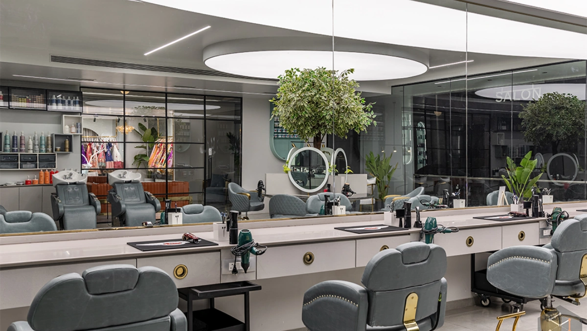

Whether you're planning a haircut, hair color, keratin treatment, hair spa, or a complete makeover, preparing your hair before a salon appointment can make a significant difference in the overall experience and final results. While professional hairstylists have the expertise to work with different hair types, arriving with properly prepared hair allows them to assess its natural condition more accurately and recommend suitable treatments.
Many people believe that preparation isn't necessary before visiting a salon. However, a few simple steps before your appointment can help support smoother treatments, healthier-looking hair, and better overall results. Taking care of your hair before your visit can also help you get the most from your salon experience.
Preparing your hair before a salon appointment helps your stylist understand its actual condition without interference from excessive product buildup or temporary styling. It can also help professional treatments work more effectively while reducing the risk of uneven results, especially for services such as hair coloring, chemical treatments, and hair repair.
Proper preparation creates a better foundation for a successful and personalized salon visit.
Avoiding these common mistakes helps your stylist assess your hair more effectively and recommend suitable services.
Sharing these concerns during your consultation allows your stylist to recommend treatments and care routines based on your individual needs.
Hair services are most effective when your stylist has a clear understanding of your hair's current condition. Product buildup, heavy oils, or recent DIY treatments can interfere with hair analysis and may affect the outcome of some professional services.
Preparing your hair also gives your stylist a better opportunity to select appropriate techniques and products for your specific hair type, helping support healthier-looking and longer-lasting results.
Different services require different preparation. For example, hair coloring may require hair that hasn't been freshly washed, while haircuts and certain treatments may be easier to perform on clean hair. Always follow the preparation recommendations provided by your salon and stylist.
Using excessive oil, wax, gel, hairspray, or dry shampoo before your appointment can make it more difficult for your stylist to assess your hair properly. Unless your stylist recommends otherwise, avoid excessive product buildup before your visit.
Brush or comb your hair gently before arriving at the salon to remove knots and reduce unnecessary pulling or breakage during your appointment.
Tell your stylist about any previous treatments or chemical services, including:
This information helps your stylist understand your hair history and choose suitable techniques while reducing the risk of unexpected results.
If you have a particular hairstyle or hair color in mind, bringing a few inspiration photos can help your stylist better understand your expectations and discuss what may work well with your hair.
Think about how much time you normally spend styling your hair each day. Sharing your lifestyle and daily routine helps your stylist recommend a haircut or hairstyle that is both attractive and practical to maintain.
Proper preparation and communication can help create a smoother salon experience for every client.
A little preparation and clear communication can make your salon appointment more productive and enjoyable.
To make the most of your visit:
Good communication and proper preparation can help create a more successful salon experience.
Preparing your hair before a professional salon appointment is a simple yet important step toward achieving beautiful and manageable results. By avoiding common mistakes, communicating openly with your stylist, and following professional recommendations, you give your hair a better foundation for your chosen service.
Whether you're visiting for a haircut, color, treatment, or complete transformation, a little preparation can make your salon experience more organized, comfortable, and satisfying.